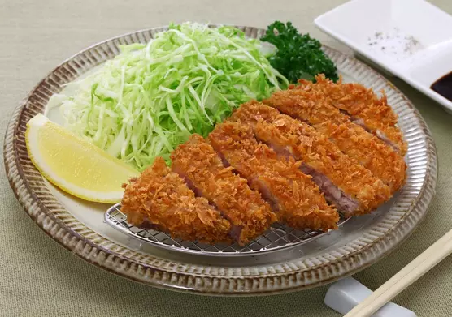

Japanese-recipes
Tonkatsu

Tonkatsu pork cutlets are one of the many yoshoku, or ‘western-style’ foods, that were originally introduced to Japan by Europeans. Like most other yoshoku foods, the Japanese took the original tonkatsu and made it their own.
Ingredients
- Pork
- Salt and pepper
- Flour
- Egg
- Panko
- Neutral flavored oil for deep frying
- Tonkatsu
- Sesame seeds
Method
- In Japan, you can purchase a type of panko called Nama Panko (生パン粉; fresh panko). It’s basically panko that has a little more moisture (think of it as the white, fluffy parts of bread). To re-create this type of panko, I spray a little water—not pour!—to moisten the panko first (more on this in the recipe).
- Make several slits on the connective tissue (white area) between the meat and fat. The reason why you do this is that red meat and fat have different elasticities. They will shrink and expand at different rates when cooked. Cutting slits on the connective tissue will allow the Tonkatsu to stay nice and flat when deep frying and prevent it from curling up.
- Getting high-quality ingredients for a recipe that only requires a few things is very important. For this Tonkatsu recipe, you can also improve the texture of the meat and make it extra tender by pounding it first. (If you don’t own a meat pounder, just use the back of your knife! That’s what I did in my college days.)
- The key to great Tonkatsu is to double fry the pork and not to overcook the meat. After deep-frying the pork once, let it sit to continue cooking on the inside with remaining heat. After a few minutes, deep fry it a second time to get that perfectly crispy, golden cutlet.
- Scoop up fried crumbs in the oil with a fine-mesh strainer. It’s very important to keep the oil clean (crumbs free) so it does not turn dark and affect the results of the crust.